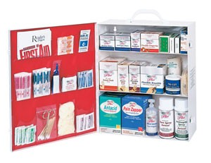
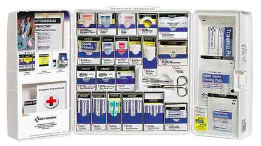
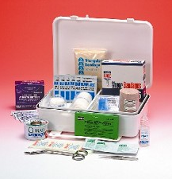
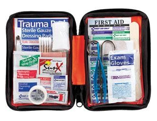
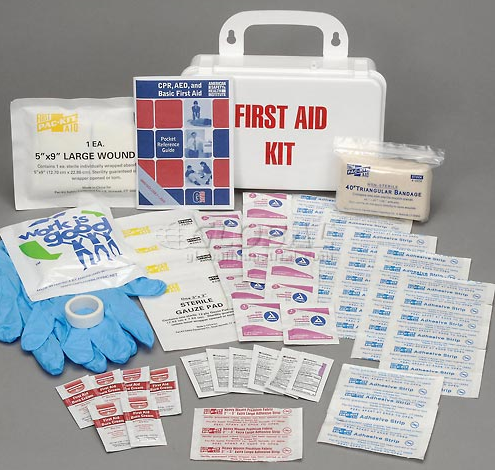

EVAid
EVAid
EVAid
EVAid
|  | |
| 1 Roll adhesive tape tri cut tape 100- 1x3 flexible fabric Hi Vis Blue Bandages 25-fingertip flexible fabric Hi Vis Blue Bandages 40-knuckle flexible fabric Hi Vis Blue Bandages 144- Hi Vis Blue Finger Cots - latex- Large 1- water gel unit dose 4- disposable latex gloves in bag 1-Ice Pack, Small Boxed 1-Antiseptic Spray 3 oz. 50-Alcohol Prep Pads 25-Triple Antibiotic Ointment 10-2"x3" Non adherent Sterile Pads 25-3"x3" Sterile Gauze Pads |
15-Cotton Tip Applicators 1- Bloodstopper Compress Dressing 1 4oz. Medi-Wash Eyewash 1-Triangular Bandage 10-Ammonia Inhalant Swabs 1-Wire Scissors 4-1/2" Disposable Tweezers 250-Antacid 250-Pain Relief Tablets First Aid Guide Eyepads ANSI sticker |
This Restaurant First Aid Kit contains a comprehensive assortment of recommended supplies for treating everyday injuries as well as additional burn treatment products. It is well equipped to handle the burns and other minor injuries common to restaurant workers and patrons. Measures 15 3/4"x16 3/4"x5 5/8" and meets OSHA first aid kit standards.
$120.00
|  | |
| 1- Scissors 1- First Aid Guide 8- Nitrile Exam Gloves 2- Triangular Sling/Bandage, 40" x 40" x 56" 2- Cold Compress, 4" x 5" 1- Conforming Gauze Roll, 4" x 5 yd 2- Conforming Gauze Roll, 2" 4- Gauze Dressing Pads, 4" x 4" 2- First Aid Tape, ½" x 5yd 100- Plastic Bandages, 1" x 3" 3- Sunscreen Lotion Packets, SPF 30 4- Trauma Pads, 5" x 9" |
2- Eye Pads 2- Adhesive Strips 1- Eyewash, 4oz 1- CPR Mask with One Way Valve 2- Burn Dressing, 4" x 4" 10- Hand Sanitizer Packets, 0.9g 50- BZK Antiseptic Towelettes 25- First Aid/Burn Cream Packets, 0.9g 25- Triple Antibiotic Ointment Packets 1- Tourniquet 4- Gauze Dressing Pads, 3" x 3" 1- Padded Splint, 4" x 24" |
This Construction First Aid Kit contains a comprehensive assortment of recommended supplies for treating everyday on the job injuries. Measures Kit Dimensions: 9.5" x 10" x 2.75" and meets OSHA first aid kit standards.
$70.00
|  | |
| 1 - Ambu Rescue Mask 5 - 1/32 oz Triple Antibiotic Foil Packs 10 - Sting Kill Wipes 1 - 1" x 5 yds Adhesive Tape 1 - 1/2 oz Eye Wash 1 - Triangle Bandage |
1 - 1/8 oz Burn Jel 10 - J&J Medium Butterfly Bandages 1 - 2" Elastic Bandage 1 - 1" Sterile Gauze Roll 100 - 3/4" Sterile Sheer Bandages 1 - 5 1/2" Heavy Duty Scissors |
This First Aid Kits tailored for Schools bring all of your medical supply needs to one convenient place. This assortment of quality products will ensure swift and proper care. No school or clinic should be without basic first aid needs. Measures: 9 3/8" x 6 1/2" X 2 3/4"
$38.00
|  | |
| 20- 3/4" x 3" Adhesive Plastic Bandages 10- 3/4" x 3" Fabric Bandages 5- 1" x 3" Fabric Bandages 2- Knuckle Fabric Bandages 2- Fingertip Fabric Bandages 2- 2" x 4" Elbow & Knee Plastic Bandages 10- 3/8" x 1 1/2" Junior Plastic Bandages 2- Butterfly Wound Closures 4- 2" x 2" Gauze Dressing Pads 2- 3" x 3" Gauze Dressing Pads 1- 5" x 9" Trauma Pad 1- 2" Conforming Gauze Roll Bandage 2- Aspirin Tablets 2- Ibuprofen Tablets 2- Extra-Strength Non-Aspirin Tablets |
6- Alcohol Cleansing Pads 6- Antiseptic Cleansing Wipes, Sting Free 2- Antibiotic Ointment Packs 2- Insect Sting Relief Pads 2- First Aid/Burn Cream Packs 1- 1/2" x 5 yds First Aid Tape Roll 1- Sunscreen Pack 1- Lip Ointment Pack 1- 2" x 2" Moleskin Square 1- 6" x 11/16" Finger Splint 1- Medium #2 Safety Pin 10- 3" Cotton Tipped Applicators 1- 4 1/2" Scissors, Nickel Plated 1- 4" Tweezers, Plastic 2- Exam Quality Vinyl Gloves 1- First Aid Guide |
This Outdoor First Aid Kit is perfect for hiking, camping, marine adventures, home, and auto. These Outdoor soft-sided Kits feature all the essential first aid items for minor aches and injuries. First Aid Supplies are easy to find in clear-pocket pages. Measures: 7 3/4" x 5" x 2 1/8"
$55.00
|  | |
| 6 Packets of burn cream 6- Packets of triple antibiotic ointment 10- Antiseptic wipes 1- 2" x 3" Woven patch 1- 1/2"W Adhesive tape roll 1-v5" x 9" Wound pad |
1- Triangular bandage 2- Pairs of exam gloves 4- 3" x 3" Sterile gauze pads 32- Adhesive strips 1- Instant cold pack 1- First Aid guide |
This Personal First Aid Kit is good for family home use. Most of these items are ideal for groups of 25 and provide easy access to aid as needed. Measures: 7-1/2" x 2-3/4" x 4-1/2"
$10.00